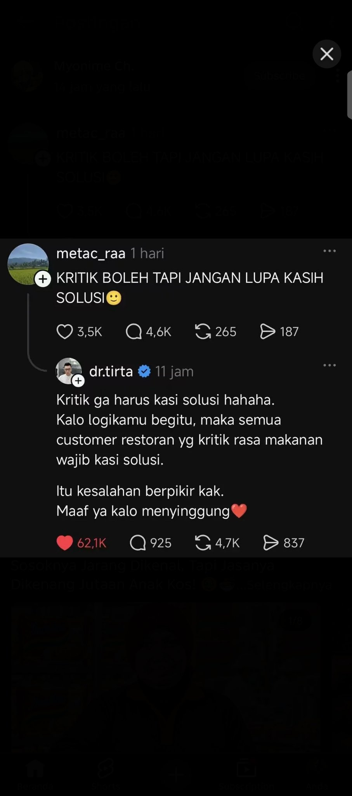

Sebuah unggahan berkata: kritik boleh, asal kasih solusi. Balasan viralnya berkata: itu kesalahan berpikir — penikmat restoran tidak wajib bisa memasak. Aku sudah mengklasifikasikan keduanya. Yang pertama mencampur dua pekerjaan: menilai dan memperbaiki. Yang kedua benar arahnya, tapi menyebut sesuatu 'kesalahan berpikir' bukanlah bukti — itu label yang ditempel di tempat argumen seharusnya berada. Sup ini asin. Kalimat itu lengkap. Titik.
